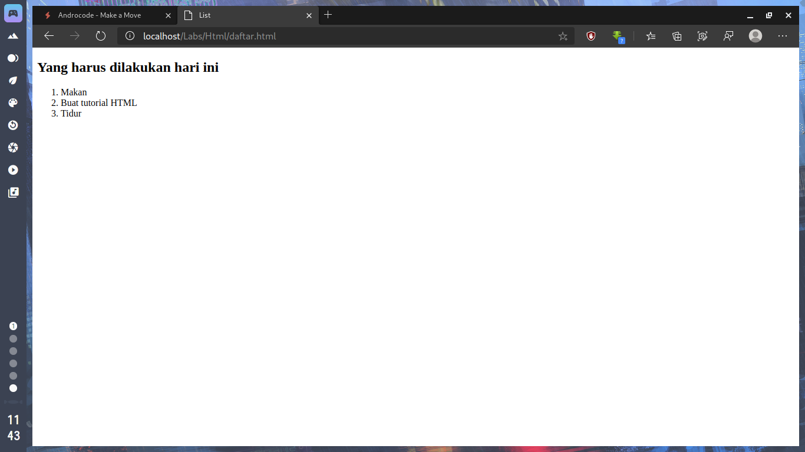
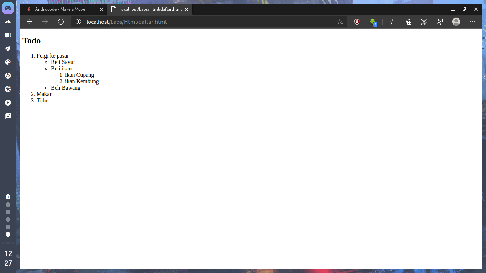

Belajar HTML : Membuat Daftar Atau List
Sebuah daftar dapat memiliki penomoran atau hanya sebuah simbol berupa lingkaran atau bentuk lainnya.
Membuat daftar/list
Dalam HTML, daftar yang menggunakan penomoran disebut dengan ordered list dan yang menggunakan simbol disebut dengan unordered list.
Ordered List
Ordered list atau Daftar berurutan dapat dibuat dengan menggunakan tag ol (singkatan dari ordered list) dan untuk setiap listnya kita gunakan tag li (singkatan dari list item/item daftar). Sebagai contoh, perhatikan kode HTML berikut :
<!doctype html>
<html lang=‚en-us‛>
<head>
<title>List</title>
</head>
<body>
<h2>Yang harus dilakukan hari ini</h2>
<ol>
<li>Makan</li>
<li>Buat tutorial HTML</li>
<li>Tidur</li>
</ol>
</body>
</html>
Penomoran daftar akan dilakukan secara otomatis ketika anda menambahkan daftar
item.

Unordered List
Berbeda dengan daftar berurut, unordered list akan menandai setiap item dengan
simbol. Baik berupa lingkaran atau persegi (anda masih bisa merubahnya dengan CSS).
Untuk membuat daftar tidak berurut kita gunakan tag ul dan seperti tag ol,
item
yang terdapat di dalamnya harus diapit dengan tag li.
Jika kita modifikasi contoh sebelumnya dengan merubah ol menjadi ul maka yang
akan kita dapat adalah seperti berikut :
<!doctype html>
<html lang=‚en-us‛>
<head>
<title>List</title>
</head>
<body>
<h2>Yang harus dilakukan hari ini</h2>
<Ul>
<li>Makan</li>
<li>Buat tutorial HTML</li>
<li>Tidur</li>
</ul>
</body>
</html>
Secara default, item akan ditandai dengan lingkaran.
Definition List
Berbeda dengan Ordered List dan Unordered List yang memiliki struktur sama, Data list
memiliki struktur tersendiri.
Biasanya data list ini digunakan untuk membuat daftar
istilah beserta definisinya seperti halnya dalam kamus.
Tag dt (definition term) digunakan untuk menampung istilah yang akan didefinisikan,
dan tag dd digunakan untuk menuliskan definisi dari dt sebelumnya.
Berikut contoh penggunaan dari Definition List :
<!doctype html>
<html lang=‚en-us‛>
<head>
<title>List</title>
</head>
<body>
<dl>
<dt>Manga</dt>
<dd>Manga (baca: man-ga, atau ma-ng-ga) merupakan kata komik dalam bahasaJepang; di luar Jepang, kata tersebut digunakan khusus untuk membicarakan tentang komik Jepang. </dd>
<dt>Mangaka</dt>
</dd>Mangaka (baca: menggambar manga man-ga-ka, atau ma-ng-ga-ka) adalah orang yang menggambar manga </dd>
</dl>
</body>
</html>
List/Daftar bersarang
Sebuah daftar bisa saja memiliki daftar lagi di dalamitemnya, atau biasa kita sebut dengan daftar/list bersarang (nested list). Contohnya seperti pada latihan yang akan kita buat berikut. Buat file baru dengan nama file latihan5.html lalu ketikkan kode HTML berikut :
<!DOCTYPE html>
<html>
<head>
<title></title>
</head>
<body>
<h2>Todo</h2>
<ol>
<li>Pergi ke pasar
<ul>
<li>Beli Sayur</li>
<li>Beli ikan
<ol>
<li>ikan Cupang</li>
<li>ikan Kembung</li>
</ol>
</li>
<li>Beli Bawang</li>
</ul>
</li>
<li>Makan</li>
<li>Tidur</li>
</ol>
</body>
</html>

Yang perlu anda perhatikan adalah di mana anda meletakkan tag ol atau ul jika anda
ingin menempatkannya pada suatu item, yaitu sebelum penutup tag list item ( /li ).
Daftar seperti ini biasa digunakan untuk pembuatan menu website, atau keperluan
lainnya yang memang membutuhkan penomoran atau sesuatu yang memiliki poin-poin.